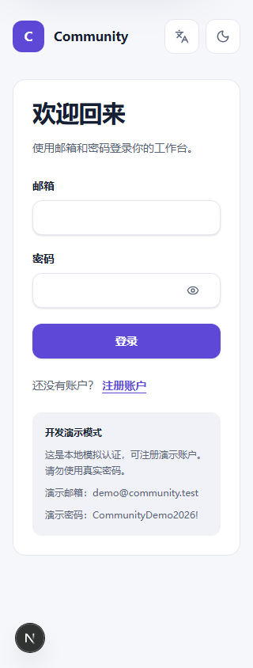
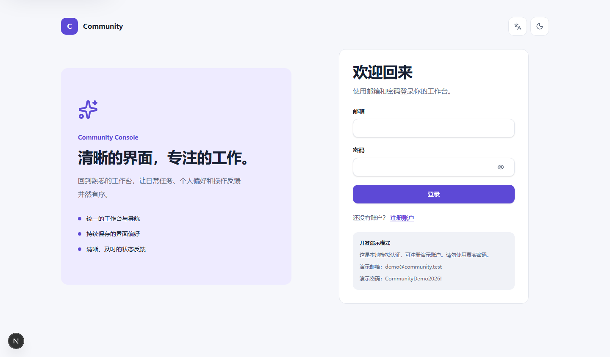
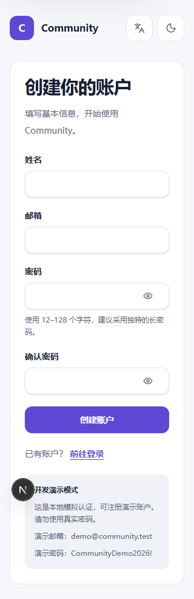
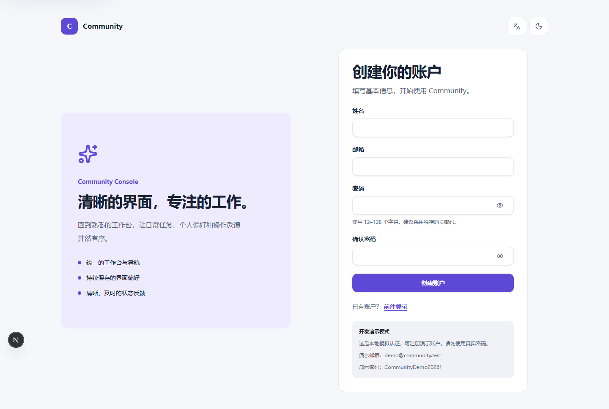
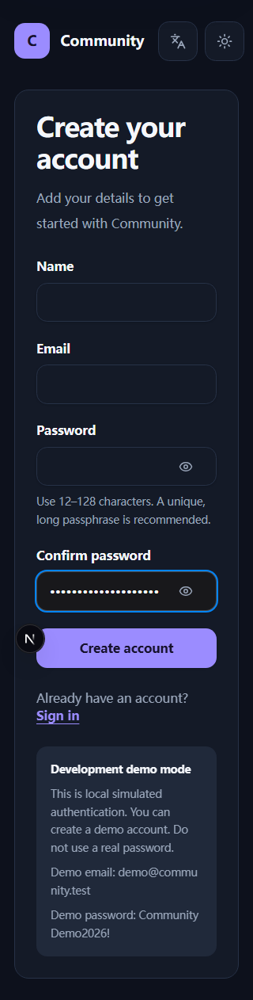

5 项新认证页面候选 + 2 项 Form 展示页密码控件变化。用户于 2026-10-09 确认本批全部 7 项，已逐项校验 SHA-256 并限定更新基线；旧图与差异保留。点击图片查看原尺寸。
浏览器完整复验 323/329 通过；另一个进度条检查因恢复就绪等待缺失，独立修复验证。Backend 受控协议 3 项通过，不代表真实服务联调。
新增基线候选（此前无基线）

候选 SHA-256: eaa737282711c3cad0e64507f5cf73b21a8ee051d2bc593e41d84e5cf8564f62
新增基线候选（此前无基线）

候选 SHA-256: 5d47e74b97ec753a52b4b0c37bd71a036581938b484bdfc77b2fae9da1a147b9
新增基线候选（此前无基线）

候选 SHA-256: cb48c0cff619d40e7337689b166ca0d656c5d1c9ccddcd8379e8b13c771e29d7
新增基线候选（此前无基线）

候选 SHA-256: 3080e99eaf0bbbd22884e579afb34f21a5a0f00a5599d3864098e80d63f048db
新增基线候选（此前无基线）

候选 SHA-256: 7d725359629194d4dcbc9c722a916b3668870a0778636f0138060ecc4ec88657
已有基线 / 当前候选 / 差异
候选 SHA-256: 903ea3263f69538ea5b2b75ce0bcb8cdfc5b37bb805dc5f39463fe7b87b9607c
已有基线 / 当前候选 / 差异
候选 SHA-256: c35988d19edeba89bca92b1b733ffb83ee2ddf9fd3c257aa34f79c4176ee3047